작성자: 박제현
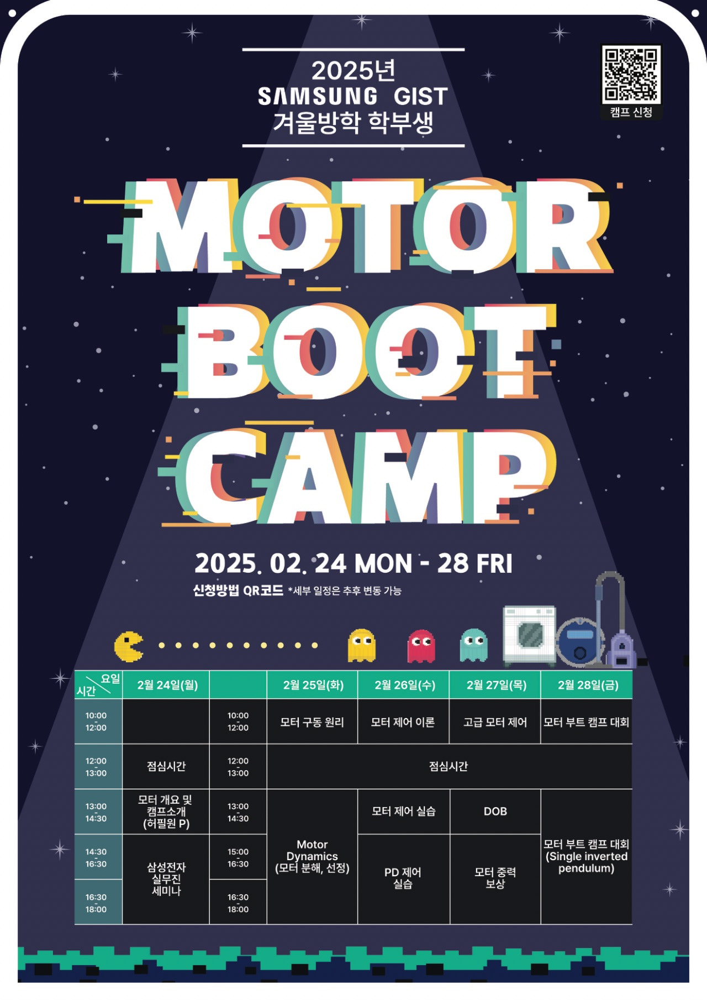
2025년 SAMSUNG-GIST 겨울방학 학부생 대상 모터 부트 캠프가 시작했습니다. 2024년 여름방학에 이어 이번 겨울에도 학생들의 많은 관심과 함께 캠프가 진행됬습니다. 이번 부트 캠프는 5일간의 일정 동안 지능형 모터의 많은 것을 알아 갈수 있는 좋은 기회였고, 기계로봇공학부와 전기전자컴퓨터공학부에서 지원한 12명의 학생들과 함께 하는 시간이었습니다.
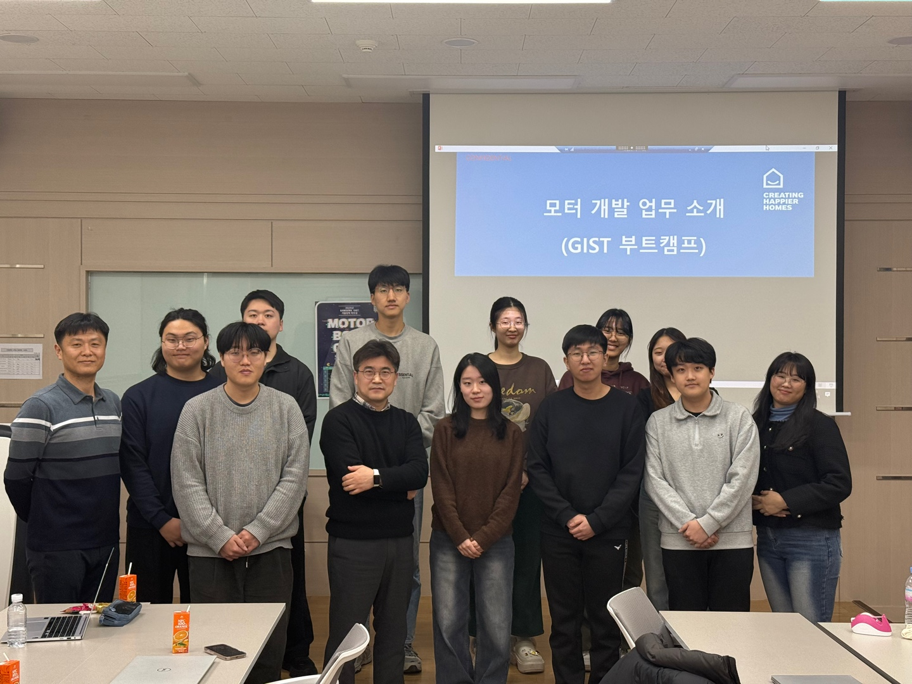
첫째 날에는 먼저 지능형 모터 인재 양성 센터 센터장이신, 허필원 교수님께서 전체적인 부트캠프의 개요를 소개해 주셨습니다. 교수님께서는 전반적인 부트캠프의 내용과, 지능형 모터 Track 지원 관련해서 많은 정보를 전달해 주셨습니다.
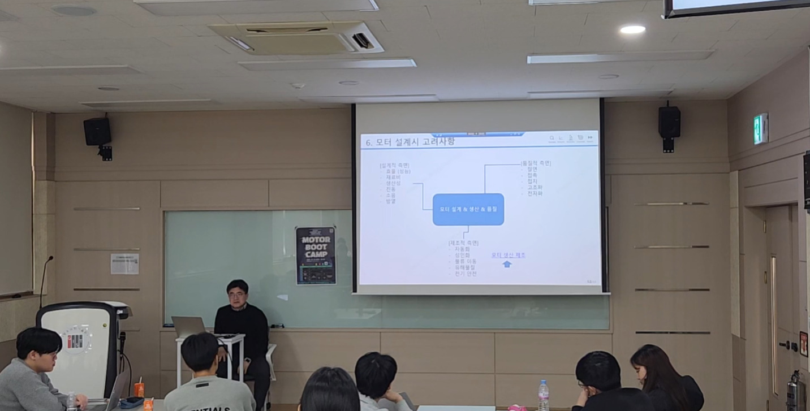
또한 삼성전자 DA사업부 모터개발 LAB에서 김종건 수석연구원님께서 오셔서 현직에서 연구하시는 내용을 소개해 주셨습니다. C&M 사업팀 소개, 에어컨 및 냉장고에 들어가는 압축기와 모터의 개발 현황, 모터의 동작 원리, 모터 설계 시 고려 사항 등을 강의하셨습니다.
학생들도 귀를 기울이며 강의에 집중했고, 저 또한 많은 정보를 알 수 있어서 뜻깊은 시간이었습니다.
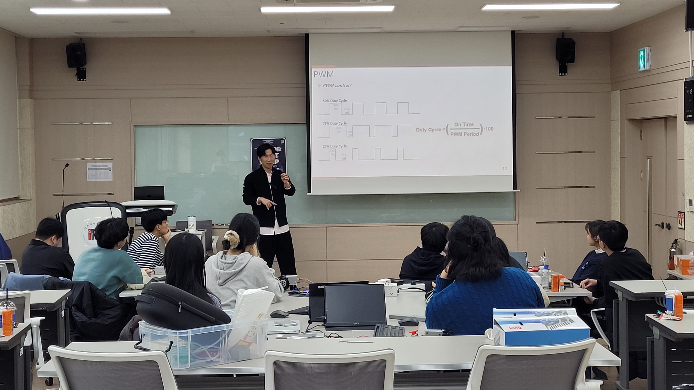
부트캠프 2일차의 막이 올랐습니다. 2일차에는 조권승 학생이 모터의 구동 원리와 모터의 전기적, 기계적 특징을 강의했습니다.
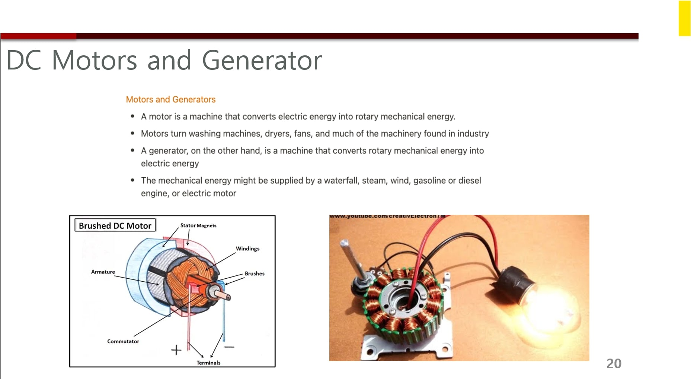
학생들에게 DC 모터의 기본적인 원리와 내부 구조를 설명하는 시간을 가지면서 모터에 대한 이해를 높히도록 했습니다.
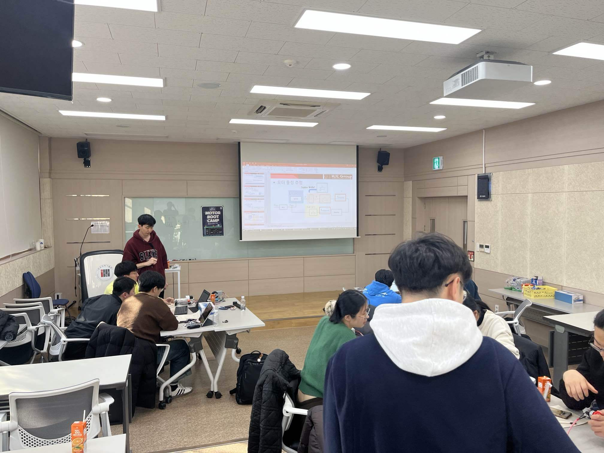
부트캠프 3일차가 시작했습니다. 3일차에는 문선웅 학생이 모터 모델링, 라플라스 변환, 모터 물성 추정 등을 강의했습니다.
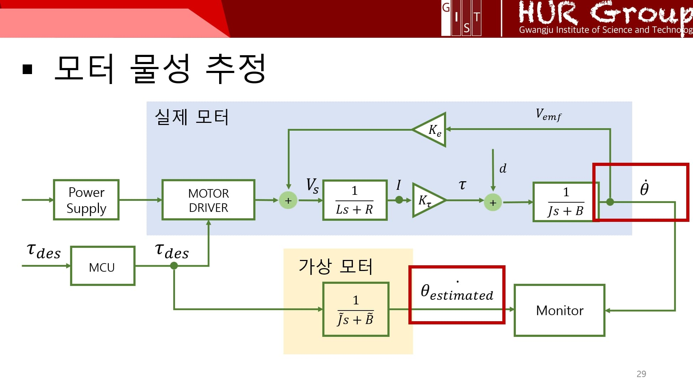
모터의 중요한 물성인 J(회전관성모멘트), B(마찰 계수)를 추정하는 과정을 강의했습니다. J는 모터가 회전 속도를 변화시키기 얼마나 어려운지를 나타내고, B는 모터의 회전을 멈추게 하려는 마찰력의 크기를 나타냅니다. 이 두 가지 물성은 모터의 동적 응답 특성을 결정하는 중요한 요소입니다.
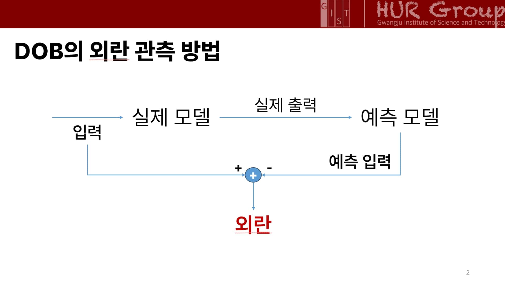
부트캠프 4일차가 시작했습니다. 4일차에는 차명주 학생이 DOB, 모터 중력 보상에 대해 강의했습니다. DOB(Disturbance OBserver)는 외란 관측기로, 제어 시스템에서 원치 않는 외란을 추정하고 제거하여 시스템의 성능을 향상시키는 기술입니다.
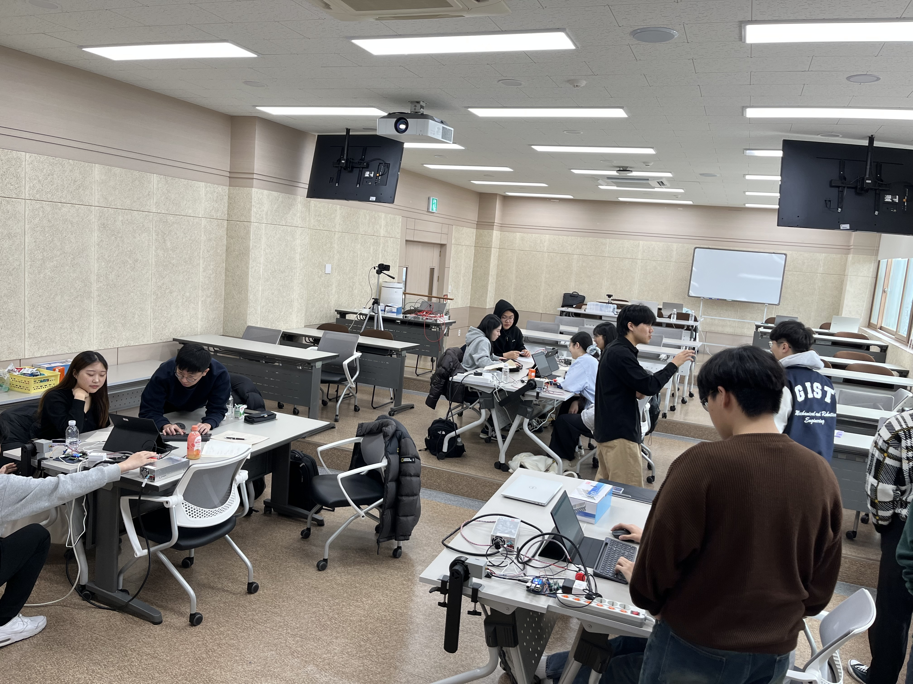
부트캠프의 마지막 날이 밝았습니다. 오늘은 single inverted pendulum 대회를 진행하는 날입니다. pendulum을 아래에서 위로 올려야 하는 것이 목표인 대회입니다. 학생들이 팀별로 열심히 의논하고 있는 모습입니다.
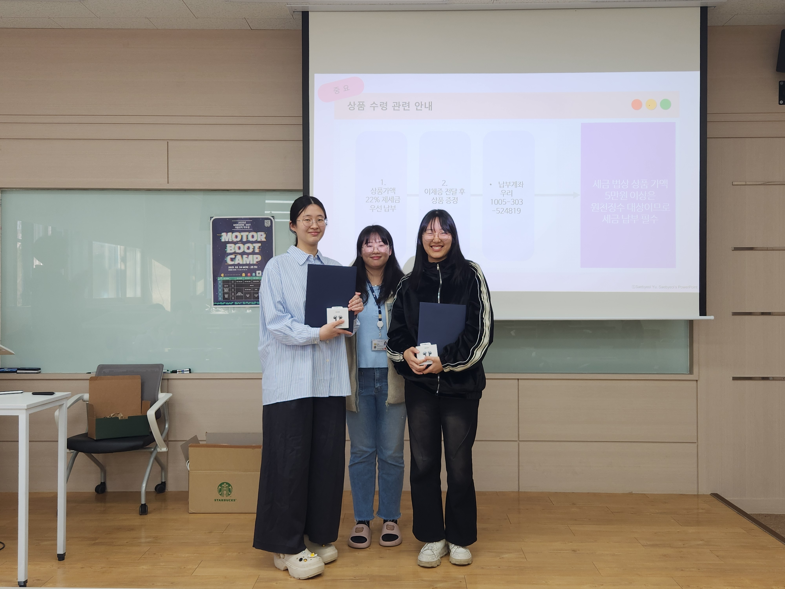
대회 진행 결과, 우수한 결과를 얻은 팀에게 상품으로 삼성 무선 이어폰이 수여됬습니다. 마지막까지 노력한 모든 학생들에게 정말 고생했다는 말을 하고 싶습니다.
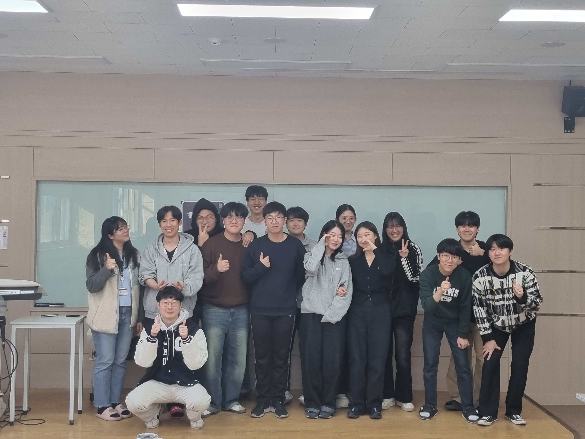
대회 진행 결과, 우수한 결과를 얻은 팀에게 상품으로 삼성 무선 이어폰이 수여됬습니다. 마지막까지 노력한 모든 학생들에게 정말 고생했다는 말을 하고 싶습니다.
참가자 명단 : 강규현, 고다연, 김경민, 김예림, 김윤태, 김재연, 박주민, 송채훈, 장서연, 최유진, 최원렬, 최현재 (가나다 순, 총 12명) 조교 : 조권승, 차명주, 문선웅, 김민석, 박제현, 김래헌